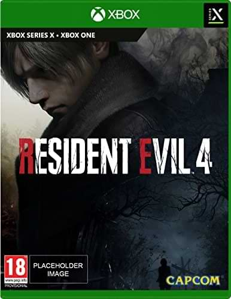

El nuevo Resident evil 4 remake
Resident evil 4 (Lanzamiento):
Resident Evil 4 llegará el 24 de marzo de 2023 a PS4, PS5, Xbox Series X/S y PC y promete hacernos disfrutar más que nunca de una de las mejores entregas de la franquicia. Resident Evil 4 ,cuyo título original en Japón es Biohazard 4, es el proximo juego a estrenar de la saga Resident Evil.
Resident evil 4 (Disponibilidad)
Si bien sabemos que Resident Evil 4 Remake estará disponible para PS4, PS5, Xbox Series X/S y PC, ahora desde Amazon se habría filtrado que también estará disponible en Xbox One, la consola de pasada generación de Microsoft que había quedado olvidada por Capcom.

Resident evil 4 (argumento)
La historia de Resident Evil 4 (remake) al igual que el original se desarrolla en el año 2004, en otoño del hemisferio norte, en un pequeño y rezagado pueblo rural del sur de Europa, exactamente en las zonas despobladas de España, todo ello siguiendo la estructura de diálogo de Leon en el videojuego original.
